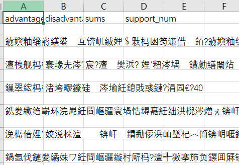
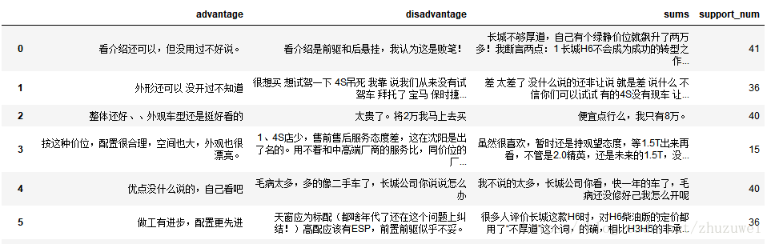
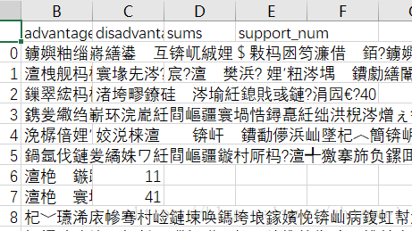

CSDN学院
CSDN学院  CSDN
CSDN 

1. 使用scrapy框架爬取了一些汽车评价保存在csv文件中，但是直接打开时乱码了。

2. 使用pandas读取再使用to_csv()方法重新保存
import pandas as pd
file_name = 'G:/myLearning/pythonML201804/spiderLearning/scrapy_learning/car_comment_crawler/\
car_comment_crawler/spiders/haval_all_page3.csv'
file_name2 = 'G:/myLearning/pythonML201804/spiderLearning/scrapy_learning/car_comment_crawler/\
car_comment_crawler/spiders/haval_all_page4.csv'
file_name3 = 'G:/myLearning/pythonML201804/spiderLearning/scrapy_learning/car_comment_crawler/\
car_comment_crawler/spiders/haval_all_page5.csv'
df = pd.read_csv(file_name, encoding='utf-8')
df
（1）使用 df.to_csv(file_name2, encoding='utf-8') 后还是编码有问题
df.to_csv(file_name2,encoding="utf_8")
（2）使用 df.to_csv(file_name2, encoding='utf_8_sig') 后中文乱码问题解决了
df.to_csv(file_name3,encoding="utf_8_sig")